| |
|
Im Sinne dieser GUV-Regel werden folgende Begriffe bestimmt:
- Steiggänge sind senkrecht oder nahezu senkrecht angeordnete Aufstiege mit ein- oder zweiläufig übereinander angeordneten, fest angebrachten oder als fester Bestandteil des Schachtes angeordneten Auftritten, z.B. Steigeisen, Steigstufen, Steigkästen, sowie Steigleitern.
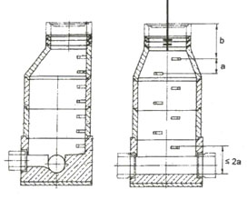 |
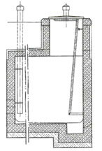 |
| Bild 1: |
Schacht mit senk-
rechtem Steiggang |
Bild 2: |
Schacht mit nahezu senk-rechtem Steiggang |
- Steigeisen sind einzelne, vorwiegend an senkrechten Bauteilen angebrachte Auftritte.
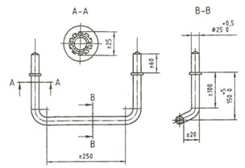 |
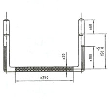 |
| Bild 3: Steigeisen für einläufige Steiggänge, Form A und Form B |
|
Siehe auch DIN EN 13 101 "Steigeisen für Steigeisengänge in Schächten; Anforderungen, Kennzeichnung, Prüfung und Beurteilung der Konformität" und DIN 19 555 "Steigeisen für einläufige Steigeisengänge; Steigeisen zum Einbau in Beton".
|
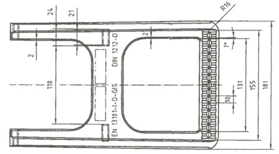 |
| Bild 4: Steigeisen für zweiläufige Steiggänge |
|
Siehe auch DIN EN 13 101, DIN 1211 "Steigeisen für zweiläufige Steigeisengänge" und DIN 1212 "Steigeisen mit Aufkantung für zweiläufige Steigeisengänge".
|
- Steigsprossen/Steigstufen sind in Schächten angeordnete vorstehende Auftritte.
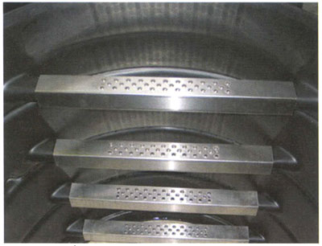 |
| Bild 5: Steigsprossen |
- Steigkästen sind in Schächten eingeformte nicht vorstehende Auftritte mit und ohne Festhaltemöglichkeit.
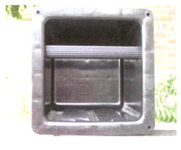 |
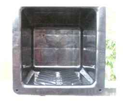 |
| Bild 6: |
Steigkasten mit Festhaltemöglichkeit |
Bild 7: |
Steigkasten ohne Festhaltemöglichkeit |
- Steigleitern sind ortsfest angebrachte Leitern bestehend aus Holm(en) und Sprossen.
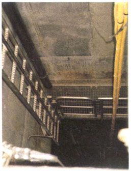 |
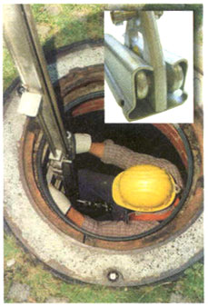 |
Bild 8:
|
Steigleiter mit Seitenholmen, Steigschutzeinrichtung und Podest |
Bild 9: |
Steigleiter mit Mittelholm, Steigschutzeinrichtung und steckbarer Haltevorrichtung |
|
Steigleitern für Schächte siehe auch DIN EN 14 396 "Ortsfeste Steigleitern für Schächte".
|
- Steigschutzeinrichtungen mit fester Führung sind an einer Schiene oder einem gespannten Drahtseil mitlaufende, selbsttätig blockierende Auffanggeräte, an denen sich die Benutzer mittels Verbindungselementen und Auffanggurten anschlagen können.
- Ortsveränderliche Steigschutzeinrichtungen sind Auffangsysteme, die im Absturzfall selbsttätig arretieren, um die über Verbindungsmittel verbundenen Benutzer zu halten. Diese Systeme sollen so ausgestattet sein, dass auch die gleichzeitige Rettung des Benutzers mit dem System möglich ist.
|
Dreibock mit Rettungshubgerät siehe Bild 18.
|
- Stationäre Haltevorrichtungen bestehen aus bauseits fest angebrachten Aufnahmen (Hülsen) und mobilen Halterohren (Bild 10).
- Mobile Haltevorrichtungen bestehen aus Spannrahmen zum Verspannen im Schachtoberteil und Halterohren/Halterahmen (Bild 11).
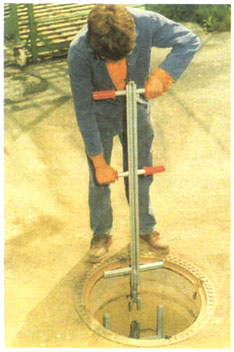 |
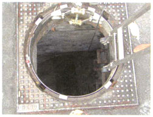
|
Bild 10:
|
Stationäre Halte- vorrichtung |
Bild 11: |
Mobile Halte-vorrichtung |
|
Siehe auch DIN 19 572 "Haltevorrichtungen zum Einsteigen in begehbare Schächte; Anforderungen, Prüfung".
|
- Als Rückenfreiraum wird der geringste Abstand zwischen den Auftritten von Steiggängen und der rückwärtigen Schachtwand bezeichnet.
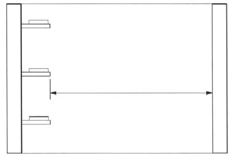 |
| Bild 12: Rückenfreiraum im Schacht |
|